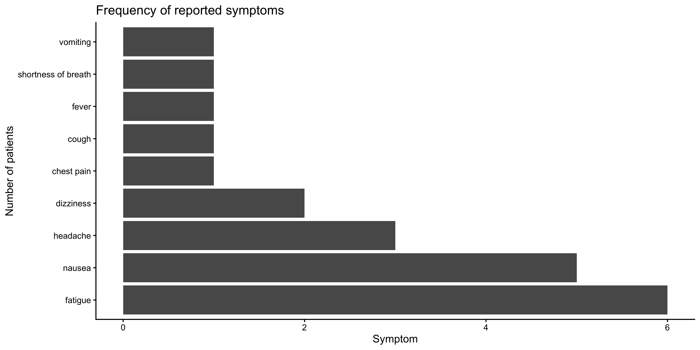

library(tidyverse)
patients <- read_csv("https://raw.githubusercontent.com/WEHI-Education/BIOL90042_R_Course/refs/heads/main/data/patient_data.csv")20 Tutorial 8: Working with strings in R
So far in this subject, we’ve only worked with relatively short string (character) data, like the mouse_strain variable from the dosage dataset. Today, we’ll work with longer, more complex strings and learn about a useful tidyverse package, stringr, that helps us to do this. These skills are very useful for cleaning up messy spreadsheet entries, or pull structured information out of free-text notes.
Like last week’s git tutorial, this is designed to be mostly self-paced: work through it independently or with friends, running the code as you go and having a go at the extra activities. We will be here to help, and can go through the trickier bits together as a class, so don’t worry if something doesn’t click on the first attempt.
TipLearning Objectives
At the end of this session, learners should be able to:
Combine strings together using
paste()andpaste0()Recognise a regular expression (regex) and be able to use them to select specific groups of characters
Detect whether a pattern is present in a string using
str_detect(), and combine this withfilter()to work with data framesSubset a character vector using a pattern, with
str_subset()Extract the part of a string matching a pattern using
str_extract()Remove or replace characters matching a pattern using
str_remove()andstr_replace()
20.1 Introducing today’s data
Let’s imagine that the mousezempic experiements went really well, and the drug (which has been creatively renamed Humanzempic for human use) has now progressed to a small Phase 1 human trial across two hospital sites: the Royal Melbourne Hospital (RMH) and Western Health (WH). As part of this trial, doctors have been recording basic patient information along with some free-text clinical notes.
As always, let’s start by loading the packages and reading in the data. Today, we’ll read in data directly from the web, by supplying the URL to the read_csv() function instead of a local file path on your computer:
Let’s start by taking a look at the patients dataframe:
patients# A tibble: 13 × 8
site patient_num first_name last_name age blood_pressure symptoms
<chr> <dbl> <chr> <chr> <dbl> <chr> <chr>
1 RMH 1 Amara Osei 54 132/85 nausea, fatigue
2 RMH 2 Liam Fitzgerald 61 145/92 headache, dizzi…
3 WH 1 Priya Nair 47 118/76 fatigue
4 WH 2 Noah Kim 39 122/80 nausea, vomiting
5 RMH 3 Grace Thompson 58 150/95 chest pain, sho…
6 WH 3 Ethan Walsh 44 128/82 fatigue, headac…
7 RMH 4 Zara Ibrahim 29 110/70 nausea
8 WH 4 Oliver Ngata 63 140/88 fatigue, nausea
9 RMH 5 Isla MacDonald 51 135/86 headache
10 WH 5 Kai Tupou 36 120/78 fever, cough
11 RMH 6 Sofia Marchetti 49 126/81 nausea, fatigue
12 WH 6 Mateo Silva 41 130/84 dizziness
13 RMH 7 Ana Petrovic 55 129/83 fatigue
# ℹ 1 more variable: clinical_notes <chr>There are 8 columns:
site: the hospital where this patient is enrolled in the trialpatient_num: an ID assigned to each patient at each sitefirst_name,last_nameandage: basic information about the patientsblood_pressure: a character string containing both the systolic and diastolic blood pressuresymptoms: a comma-separated string of patient symptomsclinical_notes: a free-text field that includes the name of the treating doctor, and their clinical observations
This data violates several of the rules of tidy data we learnt in Chapter 10, as many pieces of information are crammed into single columns (e.g. the blood_pressure column or symptoms columns), making it difficult to perform analysis.
20.2 Part 1: string basics
First, let’s work on cleaning up the patients data a little. We will use some of what we already know about data wrangling, while learning new things we can do with this string data.
20.2.1 Combining strings with paste() and paste0()
Usually, when working with patient data, it should be anonymised, so we should use a unique patient ID rather than first and last names. Let’s begin by creating a new column in patients with a patient ID, that is created by combining the site and patient_num columns (so RMH-1, RMH-2, etc)
We can do this using the paste() or paste0() functions, which allow us to stick strings together. For example, let’s say I wanted to combine the strings "Hello" and "world":
paste() combines its arguments into one string, with a space between each one by default:
paste("Hello", "world")[1] "Hello world"You can change the separator using the sep argument:
paste("Hello", "world", sep = "_")[1] "Hello_world"paste0() is a shortcut for paste(..., sep = ""), so it joins strings with nothing in between:
paste0("Hello", "world")[1] "Helloworld"So, if we wanted to combine the site and patient_num, with a dash in-between we could run:
# using paste
paste(patients$site, patients$patient_num, sep = "-") [1] "RMH-1" "RMH-2" "WH-1" "WH-2" "RMH-3" "WH-3" "RMH-4" "WH-4" "RMH-5"
[10] "WH-5" "RMH-6" "WH-6" "RMH-7"# using paste0
paste0(patients$site, "-", patients$patient_num) [1] "RMH-1" "RMH-2" "WH-1" "WH-2" "RMH-3" "WH-3" "RMH-4" "WH-4" "RMH-5"
[10] "WH-5" "RMH-6" "WH-6" "RMH-7"We can apply this knowledge to create a patient_id column using mutate(), and then remove the first and last name columns to protect the patients privacy:
patients_anon <- patients %>%
# use mutate to create
mutate(patient_id = paste0(site, "-", patient_num)) %>%
# use select with - sign to remove columns
select(-first_name, -last_name)
ImportantPractice activity: creating patient summary strings
Although we want anonymised data for our analysis, the billing department needs the full names, ages and ID of the patients for their records.
Use paste0() to create a new column called patient_summary that has the form "Amara Osei (54), RMH-1" (i.e. the patient’s full name, their age in brackets, and their patient ID).
Solution
patients %>%
mutate(
patient_summary = paste0(
first_name, " ", last_name, " (", age, "), ", site, "-", patient_num)) %>%
select(patient_summary)# A tibble: 13 × 1
patient_summary
<chr>
1 Amara Osei (54), RMH-1
2 Liam Fitzgerald (61), RMH-2
3 Priya Nair (47), WH-1
4 Noah Kim (39), WH-2
5 Grace Thompson (58), RMH-3
6 Ethan Walsh (44), WH-3
7 Zara Ibrahim (29), RMH-4
8 Oliver Ngata (63), WH-4
9 Isla MacDonald (51), RMH-5
10 Kai Tupou (36), WH-5
11 Sofia Marchetti (49), RMH-6
12 Mateo Silva (41), WH-6
13 Ana Petrovic (55), RMH-7 20.2.2 Counting characters
Next, the trial coordindator has asked us to flag any clinical notes that seem too short– apparently some of the doctors have been slacking off lately!
We can do this using the nchar() function, which counts the number of characters in a string:
nchar("Humanzempic")[1] 11
ImportantPractice activity: flagging brief notes
Use nchar() and filter() to find any patients whose clinical_notes are shorter than 30 characters.
Solution
patients %>%
filter(nchar(clinical_notes) < 30)# A tibble: 1 × 8
site patient_num first_name last_name age blood_pressure symptoms
<chr> <dbl> <chr> <chr> <dbl> <chr> <chr>
1 RMH 7 Ana Petrovic 55 129/83 fatigue
# ℹ 1 more variable: clinical_notes <chr>There is just one: patient RMH-7 (Ana Petrovic) has clinical notes that just say "Dr. Lee: Stable.". This doctor might need following up with!
20.2.3 Reshaping data using string columns
Back in workshop 3, we learnt about the separate() function from the tidyr package, and used it to split up a single character column of the form gene_replicate into separate gene and replicate columns (see Section 10.6.2). Let’s revisit this concept now, using the separate_longer_delim() and separate_wider_delim() functions, which give us control over whether to split a string into more rows (longer), or more columns (wider).
20.2.3.1 Getting one symptom per row with separate_longer_delim()
Some patients have multiple symptoms, stored as a single comma-separated string, e.g "nausea, fatigue". This isn’t very tidy: if we want to count how common each symptom is, we first need one row per symptom, rather than one row per patient.
This is what the separate_longer_delim() function does: it takes the name of a column and a delimiter, and creates a new row each time it finds that delimiter:
patients %>%
separate_longer_delim(symptoms, delim = ", ")# A tibble: 21 × 8
site patient_num first_name last_name age blood_pressure symptoms
<chr> <dbl> <chr> <chr> <dbl> <chr> <chr>
1 RMH 1 Amara Osei 54 132/85 nausea
2 RMH 1 Amara Osei 54 132/85 fatigue
3 RMH 2 Liam Fitzgerald 61 145/92 headache
4 RMH 2 Liam Fitzgerald 61 145/92 dizziness
5 WH 1 Priya Nair 47 118/76 fatigue
6 WH 2 Noah Kim 39 122/80 nausea
7 WH 2 Noah Kim 39 122/80 vomiting
8 RMH 3 Grace Thompson 58 150/95 chest pain
9 RMH 3 Grace Thompson 58 150/95 shortness of br…
10 WH 3 Ethan Walsh 44 128/82 fatigue
# ℹ 11 more rows
# ℹ 1 more variable: clinical_notes <chr>Remember that a delimeter just means a character used to separate things, in this case a comma, but it can be any character, often a dash, space or underscore.
Now that we have one symptom per row, we can use the count() function to see which symptoms are most common in the trial:
patients %>%
separate_longer_delim(symptoms, delim = ", ") %>%
count(symptoms, sort = TRUE)# A tibble: 9 × 2
symptoms n
<chr> <int>
1 fatigue 6
2 nausea 5
3 headache 3
4 dizziness 2
5 chest pain 1
6 cough 1
7 fever 1
8 shortness of breath 1
9 vomiting 1
ImportantPractice activity: visualising symptom frequency
Using the long-form data you made above, produce a bar chart showing how many patients reported each symptom, using ggplot2’s geom_bar().
Solution
patients %>%
separate_longer_delim(symptoms, delim = ", ") %>%
# using fct_infreq() automatically converts symptoms to
# a factor, and orders it by frequency
ggplot(aes(y = fct_infreq(symptoms))) +
geom_bar() +
theme_classic() +
labs(
x = "Symptom", y = "Number of patients",
title = "Frequency of reported symptoms")
20.2.3.2 Splitting blood pressure into two columns with separate_wider_delim()
Unlike the symptoms column, the blood_pressure contains two separate pieces of information (systolic and diastolic blood pressure) that we’d like as their own columns, rather than as extra rows.
We can do this using separate_wider_delim(), which takes in addition to the column you want to separate and the delimiter, also a vector of names for the new columns, like so:
patients %>%
separate_wider_delim(
blood_pressure,
delim = "/",
names = c("systolic", "diastolic")
)# A tibble: 13 × 9
site patient_num first_name last_name age systolic diastolic symptoms
<chr> <dbl> <chr> <chr> <dbl> <chr> <chr> <chr>
1 RMH 1 Amara Osei 54 132 85 nausea, fat…
2 RMH 2 Liam Fitzgerald 61 145 92 headache, d…
3 WH 1 Priya Nair 47 118 76 fatigue
4 WH 2 Noah Kim 39 122 80 nausea, vom…
5 RMH 3 Grace Thompson 58 150 95 chest pain,…
6 WH 3 Ethan Walsh 44 128 82 fatigue, he…
7 RMH 4 Zara Ibrahim 29 110 70 nausea
8 WH 4 Oliver Ngata 63 140 88 fatigue, na…
9 RMH 5 Isla MacDonald 51 135 86 headache
10 WH 5 Kai Tupou 36 120 78 fever, cough
11 RMH 6 Sofia Marchetti 49 126 81 nausea, fat…
12 WH 6 Mateo Silva 41 130 84 dizziness
13 RMH 7 Ana Petrovic 55 129 83 fatigue
# ℹ 1 more variable: clinical_notes <chr>
ImportantPractice activity: analysing blood pressure
Now that the systolic and diastolic blood pressures are in their own columns, we can convert them to numeric and perform some analysis of them (e.g. calculating summary statistics).
Find the mean of both systolic and diastolic blood pressure.
Solution
# first let's save our separated data as its own variable
patients_bp_sep <- patients %>%
separate_wider_delim(
blood_pressure,
delim = "/",
names = c("systolic", "diastolic")
)
# now, calculate summary stats for each:
patients_bp_sep %>%
# get systolic column
pull(systolic) %>%
# convert to numeric first
as.numeric() %>%
summary() Min. 1st Qu. Median Mean 3rd Qu. Max.
110.0 122.0 129.0 129.6 135.0 150.0 # repeat same for diastolic
patients_bp_sep %>%
pull(diastolic) %>%
as.numeric() %>%
summary() Min. 1st Qu. Median Mean 3rd Qu. Max.
70.00 80.00 83.00 83.08 86.00 95.00 20.3 Part 2: using stringr and regex
For the rest of today’s session, we’ll be using functions from the stringr package (loaded automatically as part of the tidyverse) to search for, extract and replace text.
Most stringr functions take the same first two arguments:
string, which is the string you want to run the function on. This can be a single string like"cats"or a character vector.pattern, which is the pattern you want to find/replace/extract etc. This is often, but not always, a regular expression.
Note that because stringr functions work on vectors, to use them on columns in a data frame, you need to either use dataframe$column syntax, or use them within dplyr functions like filter() or mutate().
20.3.1 Regular expressions
Regular expressions (usually shortened to ‘regex’) are an extremely powerful (and complex!) language for describing patterns within strings. Have you ever created a new password for a website, and been told it isn’t long enough, or doesn’t contain a special character? These checks are handled by regex, and in data analysis you can use them to filter your data, or extract numbers from blocks of text.
Regex is extremely complicated, and we could probably spend a whole semester on it alone. This quote sums it up nicely:
Some people, when confronted with a problem, think “I know, I’ll use regular expressions.” Now they have two problems.
—Jamie Zawinski
For today, let’s just consider the following:
| Pattern | Matches |
|---|---|
"fever" |
The exact text fever (a fixed pattern) |
\\d |
Any single digit (0–9) |
\\w |
Any letter or number |
. |
Any single character |
* |
0 or more matches (e.g. x* matches '' or 'x' or 'xx' and so on) |
+ |
1 or more matches (e.g. x* matches 'x' or 'xx' and so on. Doesn’t match empty string) |
^ |
The start of the string |
$ |
The end of the string |
\\. |
A literal full stop (since . alone means ‘any character’, we need to ‘escape’ it with \\) |
Don’t worry if it doesn’t make sense yet! We’ll see some examples below, and regex is very much a ‘learn by doing’ skill so it will just take time. It’s also completely fine to ask AI for help writing a tricky regex pattern, so long as you check and understand what it’s doing before you use it!
20.3.2 Detecting patterns with str_detect()
str_detect(string, pattern) checks whether a pattern is found anywhere inside each string, and returns TRUE or FALSE:
str_detect("Patient reports mild fever", "fever")[1] TRUEBecause it returns a logical value, str_detect() is extremely useful combined with filter(), to keep only the rows of a data frame where a pattern is present. For example, let’s find every patient whose clinical notes mention "fatigue":
patients %>%
filter(str_detect(clinical_notes, "fatigue"))# A tibble: 5 × 8
site patient_num first_name last_name age blood_pressure symptoms
<chr> <dbl> <chr> <chr> <dbl> <chr> <chr>
1 RMH 1 Amara Osei 54 132/85 nausea, fatigue
2 WH 1 Priya Nair 47 118/76 fatigue
3 WH 3 Ethan Walsh 44 128/82 fatigue, headache
4 WH 4 Oliver Ngata 63 140/88 fatigue, nausea
5 RMH 6 Sofia Marchetti 49 126/81 nausea, fatigue
# ℹ 1 more variable: clinical_notes <chr>
ImportantPractice activity: finding a possible adverse event
The trial coordinators are concerned about Grace Thompson’s case, and want to check whether any other patients have reported similar cardiac symptoms. Use str_detect() and filter() to find any patients whose clinical_notes mention "chest pain" and see whether this is something multiple people have experienced.
Solution
patients %>%
filter(str_detect(clinical_notes, "chest pain"))# A tibble: 1 × 8
site patient_num first_name last_name age blood_pressure symptoms
<chr> <dbl> <chr> <chr> <dbl> <chr> <chr>
1 RMH 3 Grace Thompson 58 150/95 chest pain, short…
# ℹ 1 more variable: clinical_notes <chr>Only Grace Thompson (RMH-3) mentions chest pain in this dataset, which is reassuring.
20.3.3 Subsetting a character vector with str_subset()
str_detect() tells you whether each string matches, but sometimes you just want the matching strings themselves, without having to use filter.
str_subset(string, pattern) returns the values of string that contained pattern, but it only works on a character vector, not directly on a whole data frame.
str_subset(patients$clinical_notes, "chest pain")[1] "Dr. Ahmed: Patient reports chest pain and shortness of breath. Humanzempic dose withheld pending cardiology review."
ImportantPractice activity: mild symptoms
Imagine we are interested in patients experiencing ‘mild’ symptoms Use str_subset() to find all mentions of mild symptoms in the clinical_notes column.
Solution
str_subset(patients$clinical_notes, "mild")[1] "Dr. Chen: Patient reports mild nausea and fatigue since starting 500mg Humanzempic three weeks ago. Advised to take medication with food. Follow-up in 4 weeks."
[2] "Dr. Singh: Ongoing fatigue and mild nausea on 500mg Humanzempic. Patient otherwise stable."
[3] "Dr. Singh: Patient reports mild dizziness, blood pressure stable. Continuing 500mg Humanzempic." 20.3.4 Extracting parts of a string that match a pattern with str_extract()
So far, we’ve learnt how to find patterns in our strings, but what if we want to extract just the parts of the string that match that pattern? This is where regular expressions start to become really powerful, when combined with str_extract(string, pattern) which returns the part of the string that matches the pattern (or NA if there’s no match).
For example, most of the clinical notes mention the Humanzempic dose, written as a number of digits followed directly by "mg". We can extract the dose using the regex pattern "\\d+mg" (one or more digits, followed by "mg"):
patients %>%
mutate(dose = str_extract(clinical_notes, "\\d+mg"))# A tibble: 13 × 9
site patient_num first_name last_name age blood_pressure symptoms
<chr> <dbl> <chr> <chr> <dbl> <chr> <chr>
1 RMH 1 Amara Osei 54 132/85 nausea, fatigue
2 RMH 2 Liam Fitzgerald 61 145/92 headache, dizzi…
3 WH 1 Priya Nair 47 118/76 fatigue
4 WH 2 Noah Kim 39 122/80 nausea, vomiting
5 RMH 3 Grace Thompson 58 150/95 chest pain, sho…
6 WH 3 Ethan Walsh 44 128/82 fatigue, headac…
7 RMH 4 Zara Ibrahim 29 110/70 nausea
8 WH 4 Oliver Ngata 63 140/88 fatigue, nausea
9 RMH 5 Isla MacDonald 51 135/86 headache
10 WH 5 Kai Tupou 36 120/78 fever, cough
11 RMH 6 Sofia Marchetti 49 126/81 nausea, fatigue
12 WH 6 Mateo Silva 41 130/84 dizziness
13 RMH 7 Ana Petrovic 55 129/83 fatigue
# ℹ 2 more variables: clinical_notes <chr>, dose <chr>
NoteHow many matches?
It’s always good practice to check that your regex is working as intended. If you view the patients dataframe, you might notice that Noah Kim (patient ID: WH-2) was originally taking 1000mg, but the doctor has dropped the dose to 500mg. However, our dose column only contains the old dose, 1000mg.
This is because the stringr functions find the first match, not all matches. Many of the functions, including str_extract() have a variant ending in _all that allow you to find all matches, like str_extract_all().
ImportantPractice activity: extracting the treating doctor
Every clinical note begins with the treating doctor’s surname, written in the format "Dr. Surname:" (for example, "Dr. Chen:").
Use str_extract() with the regex pattern "Dr\\. \\w+" to create a new column called doctor containing just this part of the note.
(Pattern explanation: \\w matches any single ‘word’ character, i.e. a letter, digit or underscore, and \\. matches a literal full stop.)
Solution
patients %>%
mutate(doctor = str_extract(clinical_notes, "Dr\\. \\w+"))# A tibble: 13 × 9
site patient_num first_name last_name age blood_pressure symptoms
<chr> <dbl> <chr> <chr> <dbl> <chr> <chr>
1 RMH 1 Amara Osei 54 132/85 nausea, fatigue
2 RMH 2 Liam Fitzgerald 61 145/92 headache, dizzi…
3 WH 1 Priya Nair 47 118/76 fatigue
4 WH 2 Noah Kim 39 122/80 nausea, vomiting
5 RMH 3 Grace Thompson 58 150/95 chest pain, sho…
6 WH 3 Ethan Walsh 44 128/82 fatigue, headac…
7 RMH 4 Zara Ibrahim 29 110/70 nausea
8 WH 4 Oliver Ngata 63 140/88 fatigue, nausea
9 RMH 5 Isla MacDonald 51 135/86 headache
10 WH 5 Kai Tupou 36 120/78 fever, cough
11 RMH 6 Sofia Marchetti 49 126/81 nausea, fatigue
12 WH 6 Mateo Silva 41 130/84 dizziness
13 RMH 7 Ana Petrovic 55 129/83 fatigue
# ℹ 2 more variables: clinical_notes <chr>, doctor <chr>20.3.5 Editing strings with str_remove() and str_replace()
We often want to clean up messy text by removing or swapping out matched patterns entirely. str_remove(string, pattern) deletes the first match of pattern from each string, and str_replace(string, pattern, replacement) swaps it out for some new text instead.
Let’s use str_remove() to strip the "Dr. Surname: " prefix off the front of each note, so we’re left with just the clinical content:
patients %>%
mutate(clinical_notes = str_remove(clinical_notes, "^Dr\\. \\w+: "))# A tibble: 13 × 8
site patient_num first_name last_name age blood_pressure symptoms
<chr> <dbl> <chr> <chr> <dbl> <chr> <chr>
1 RMH 1 Amara Osei 54 132/85 nausea, fatigue
2 RMH 2 Liam Fitzgerald 61 145/92 headache, dizzi…
3 WH 1 Priya Nair 47 118/76 fatigue
4 WH 2 Noah Kim 39 122/80 nausea, vomiting
5 RMH 3 Grace Thompson 58 150/95 chest pain, sho…
6 WH 3 Ethan Walsh 44 128/82 fatigue, headac…
7 RMH 4 Zara Ibrahim 29 110/70 nausea
8 WH 4 Oliver Ngata 63 140/88 fatigue, nausea
9 RMH 5 Isla MacDonald 51 135/86 headache
10 WH 5 Kai Tupou 36 120/78 fever, cough
11 RMH 6 Sofia Marchetti 49 126/81 nausea, fatigue
12 WH 6 Mateo Silva 41 130/84 dizziness
13 RMH 7 Ana Petrovic 55 129/83 fatigue
# ℹ 1 more variable: clinical_notes <chr>Notice the ^ at the start of the pattern. This ‘anchors’ the match to the beginning of the string, so we only remove the doctor’s name if it appears right at the start (rather than accidentally matching a doctor’s name mentioned anywhere else in the note).
We could use str_replace() if, say, the trial had to be blinded and every mention of the drug name needed to be swapped out for a neutral placeholder:
patients %>%
mutate(clinical_notes = str_replace(clinical_notes, "Humanzempic", "the study drug"))# A tibble: 13 × 8
site patient_num first_name last_name age blood_pressure symptoms
<chr> <dbl> <chr> <chr> <dbl> <chr> <chr>
1 RMH 1 Amara Osei 54 132/85 nausea, fatigue
2 RMH 2 Liam Fitzgerald 61 145/92 headache, dizzi…
3 WH 1 Priya Nair 47 118/76 fatigue
4 WH 2 Noah Kim 39 122/80 nausea, vomiting
5 RMH 3 Grace Thompson 58 150/95 chest pain, sho…
6 WH 3 Ethan Walsh 44 128/82 fatigue, headac…
7 RMH 4 Zara Ibrahim 29 110/70 nausea
8 WH 4 Oliver Ngata 63 140/88 fatigue, nausea
9 RMH 5 Isla MacDonald 51 135/86 headache
10 WH 5 Kai Tupou 36 120/78 fever, cough
11 RMH 6 Sofia Marchetti 49 126/81 nausea, fatigue
12 WH 6 Mateo Silva 41 130/84 dizziness
13 RMH 7 Ana Petrovic 55 129/83 fatigue
# ℹ 1 more variable: clinical_notes <chr>
Notestr_remove() vs str_replace()
str_remove(string, pattern) is actually a shortcut for str_replace(string, pattern, ""), because removing is just replacing with nothing! Keep in mind that both functions only act on the first match in each string. If you want to replace every match, use str_remove_all() or str_replace_all() instead.
ImportantPractice activity: de-identifying dosage information
For privacy reasons, the trial coordinators want a fully de-identified copy of the notes that hides the exact dosage. Use str_replace_all() to replace every digit in each patient’s clinical_notes with the letter "X" (so "500mg" becomes "XXXmg").
(Hint: remember that \\d matches a single digit, and you’ll want to replace every match, not just the first one.)
Solution
patients %>%
mutate(clinical_notes = str_replace_all(clinical_notes, "\\d", "X"))# A tibble: 13 × 8
site patient_num first_name last_name age blood_pressure symptoms
<chr> <dbl> <chr> <chr> <dbl> <chr> <chr>
1 RMH 1 Amara Osei 54 132/85 nausea, fatigue
2 RMH 2 Liam Fitzgerald 61 145/92 headache, dizzi…
3 WH 1 Priya Nair 47 118/76 fatigue
4 WH 2 Noah Kim 39 122/80 nausea, vomiting
5 RMH 3 Grace Thompson 58 150/95 chest pain, sho…
6 WH 3 Ethan Walsh 44 128/82 fatigue, headac…
7 RMH 4 Zara Ibrahim 29 110/70 nausea
8 WH 4 Oliver Ngata 63 140/88 fatigue, nausea
9 RMH 5 Isla MacDonald 51 135/86 headache
10 WH 5 Kai Tupou 36 120/78 fever, cough
11 RMH 6 Sofia Marchetti 49 126/81 nausea, fatigue
12 WH 6 Mateo Silva 41 130/84 dizziness
13 RMH 7 Ana Petrovic 55 129/83 fatigue
# ℹ 1 more variable: clinical_notes <chr>20.4 Putting it all together
Let’s finish with one activity that combines several of today’s functions.
ImportantPractice activity: a tidy summary table
Starting from the original patients data frame, write code that:
- Extracts the Humanzempic dose from
clinical_notesinto a new column calleddose - Filters the data to keep only patients whose clinical notes mention
"nausea" - Removes the units in the
dosecolumn, and converts it to numeric - Calculates the mean dosage of patients experiencing nausea
Solution
patients %>%
# extract the dose
mutate(
dose = str_extract(clinical_notes, "\\d+mg")
) %>%
# filter to just patients with nausea
filter(str_detect(clinical_notes, "nausea")) %>%
# remove mg and convert dose to numeric
mutate(dose = as.numeric(str_remove(dose, "mg"))) %>%
# calculate the mean dose
pull(dose) %>%
mean()[1] 583.333320.5 Further resources for working with strings
Today we’ve learnt the basics of stringr and regex, but there is a lot more to strings! If you’d like to go further, these are some good resources:
- The stringr cheatsheet summarises the different functions in the
stringrpackage, as well as some common regex patterns - Chapter 15 of R for Data Science covers strings and regular expressions in much greater depth
- Regex101 is a handy website that allows you to try out regex in your browser
- The stringdist R package, which allows you to do ‘fuzzy’ (non-exact) matching, to tolerate typos